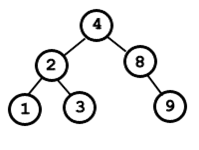

Qué son los árboles binarios de búsqueda
Empezaremos definiendo lo que son los árboles. Un árbol es una colección de nodos que puede estar vacía o no. Si no está vacía, el árbol estará formado por un nodo raíz y cero o más (sub)árboles que están unidos a la raíz por otras tantas aristas.
Para que un árbol sea binario es requisito indispensable el que el número máximo de hijos que tenga cada nodo sea 2. Por lo tanto el árbol anterior no es un árbol binario, ya que el nodo A tiene 3 hijos.
Por último, un árbol será de búsqueda si todos sus nodos cumplen las siguientes condiciones:
- Todos los nodos situados a su izquierda son menores que él.
- Todos los nodos situados a su derecha son mayores que él.
- Resumiendo, se puede decir que un árbol binario de búsqueda es un árbol en el que cada nodo tiene a lo sumo dos hijos, y en el que para cada nodo todos los nodos a su izquierda son menores que él y todos los nodos a su derecha son mayores que él.
El siguiente árbol es un ejemplo de árbol de búsqueda:

En cambio este árbol viola la condición de orden en el nodo 2, ya que un nodo a su derecha, 1, no es mayor que él.